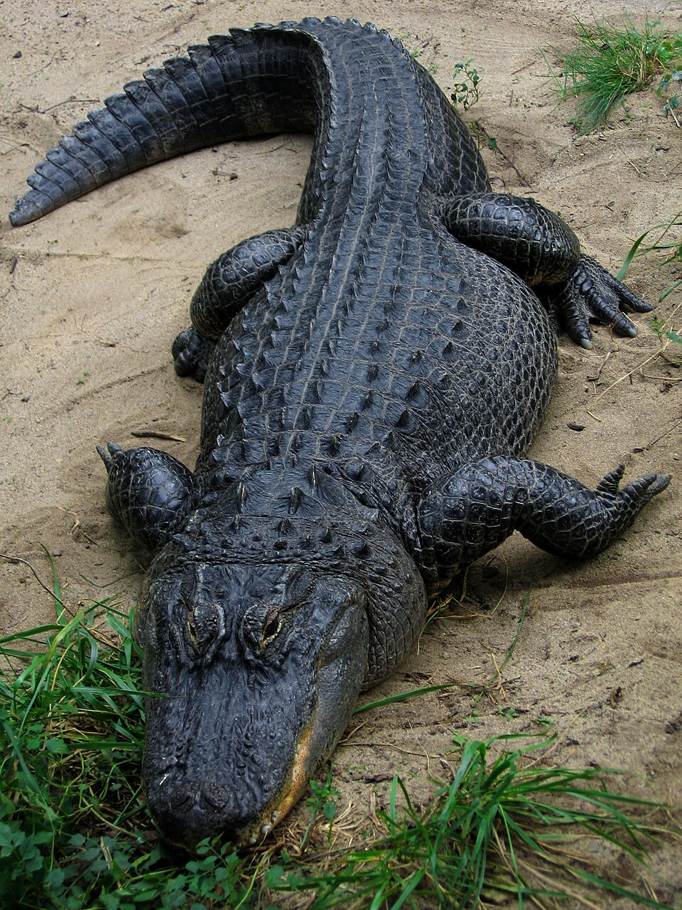

El leopardo (Panthera pardus) es un mamífero de la familia de los félidos. Al igual que tres de los demás félidos del género Panthera, el león, el tigre y el jaguar, se caracteriza por una modificación en el hueso hioides que le permite rugir. También se le conoce como pantera parda y, cuando presenta un pelaje completamente oscuro (melánico), como pantera negra.

El oso polar u oso blanco (Ursus maritimus) es una especie de mamífero carnívoro de la familia de los osos (Ursidae).[2] Es junto con su pariente, el oso Kodiak (Ursus arctos middendorffi), uno de los carnívoros terrestres más grandes de la Tierra.[3] Vive en el medio polar y zonas heladas del hemisferio norte. Es el único superdepredador del Ártico.